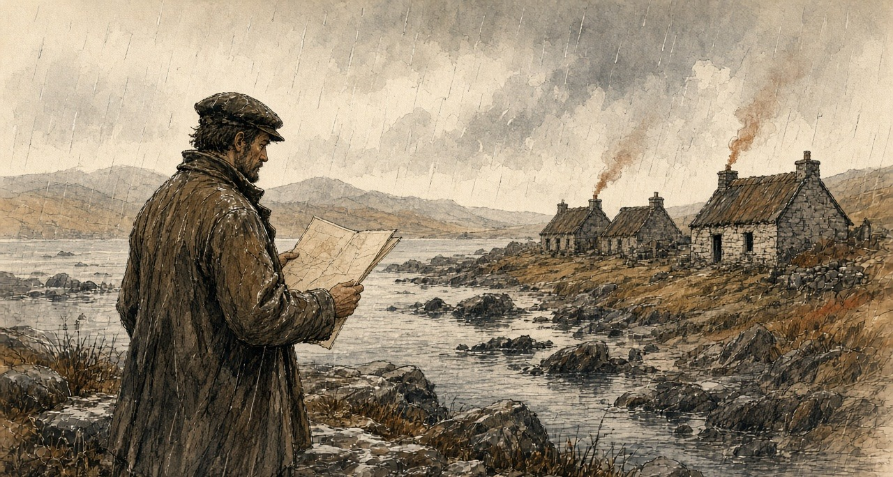
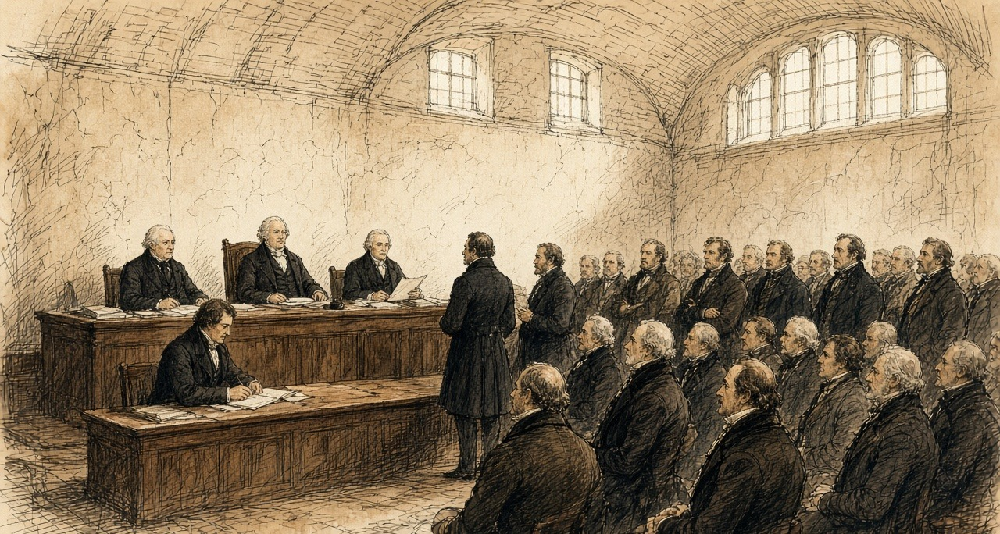
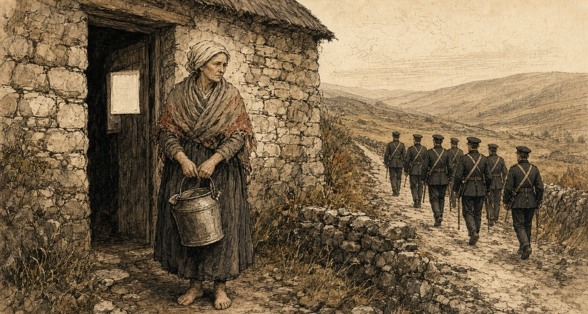
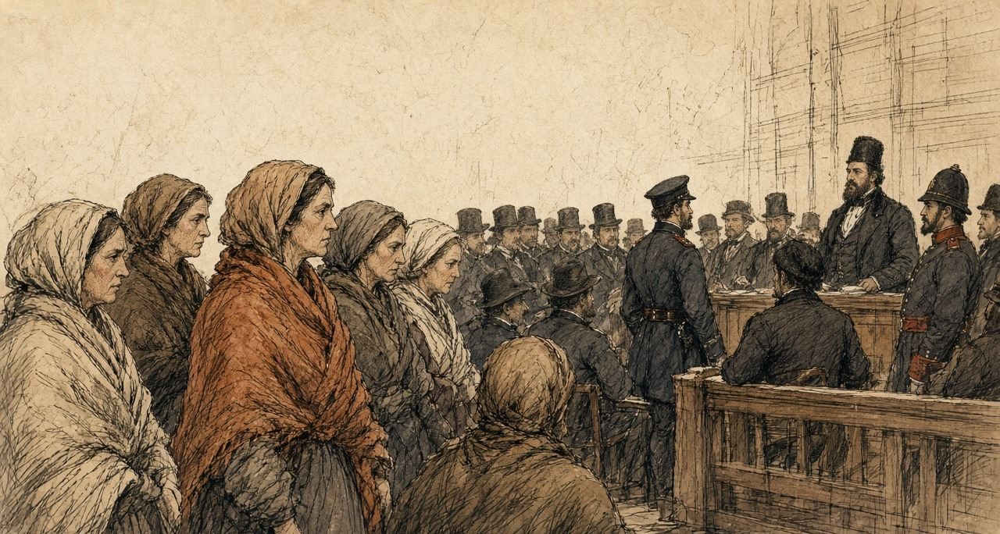
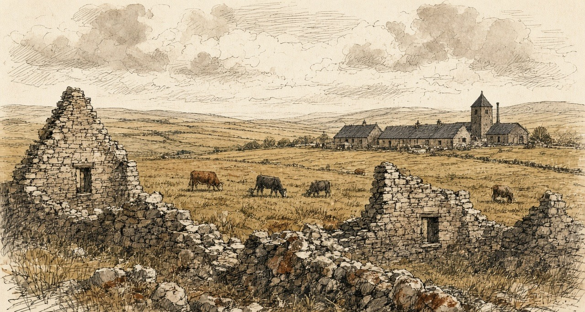
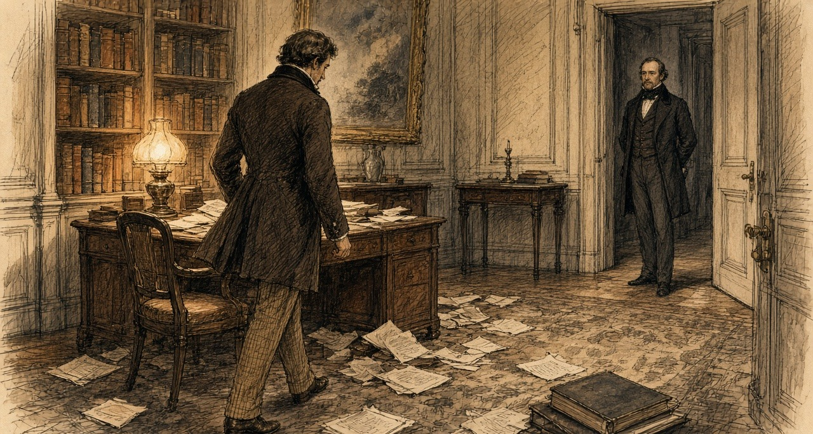
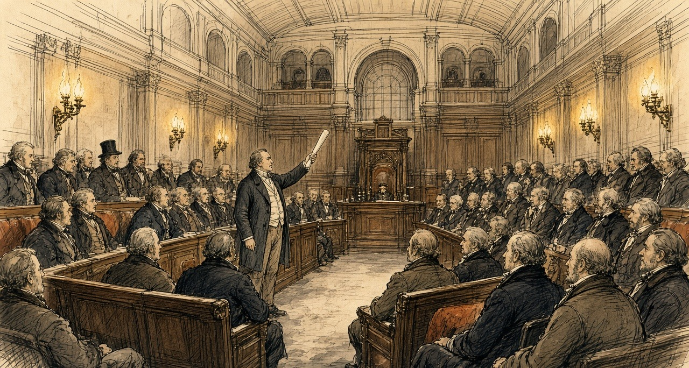

Chapter 11
Valid Against the World, 1849–1856
Whitehall, Westminster, Connemara, 14 Henrietta Street, the parish of Ballynakill in county Galway, Eyrecourt and Hampstead Heath, 1848 to 1856
In the first weeks of 1848 Charles Trevelyan published his account of the famine relief, The Irish Crisis, and near the end of it he turned from food to land. Quoting two pamphlets at length, he described the men who held much of the soil of Ireland and could neither improve it nor sell it. They were owners for life under settlements and entails, with jointures to widows and portions to younger children charged on the rents, and judgments and mortgages on top. Behind them, when the interest went unpaid, came a receiver of the Court of Chancery.
He gave his remedy in one sentence. "The remedy for this state of things is simply the sale of the encumbered estate, or of a sufficient portion of it to enable the owner to discharge his encumbrances and to place him in a position to do his duty towards the remainder."
He went on. "This is the master-key to unlock the field of industry in Ireland. The seller, in all such cases, is incapable of making a proper use of the land. The purchaser, on the other hand, may safely be assumed to be an improver."
A Bill to make such sales easier had passed the Lords in 1847 and been withdrawn in the Commons. The insurance companies, Trevelyan noted, "who are the principal lenders on Irish mortgages," had objected "to having their investments disturbed." An Act of 1848 followed it.
* * *
The House of Commons, Friday, 11 May 1849
The Solicitor-General moved the second reading of the Government's new Bill. It took the sale of encumbered land out of Chancery altogether. A commission of three would sit in Dublin. Either the owner or any creditor could petition it for a sale, and the commissioners would sell, pay the creditors out of the money in their order, and give the buyer a conveyance that no earlier claim could disturb. The lawyers called it a parliamentary title.
Member after member rose to approve it. Two of them told the House what the market was like.
Mr. Grogan said there were "already more estates in the market than could find purchasers." He knew of one lately sold "for between ten and eleven years' purchase, although the title was perfectly clear." Sir Henry Winston Barron said that within the last few days three estates had been offered for sale in Dublin. Two had found no purchasers. The third "was sold at 60 per cent under what was considered by the best judges as its real value."
Colonel Dunne thought the Bill a faulty measure. Any man, from spite or political enmity, could force the sale of an estate "by merely buying up some small debt upon it." Six million pounds a year already went out of Ireland to absentee proprietors. He did not believe many Irishmen would be found able to buy, and he said where the land would go. "He thought the Irish estates would be bought up by speculators, and persons anxious to seize upon Irish property; and the result would be, unless some timely precautions were taken, that the land would get into the hands of non-residents, and the evils to the population would be increased."
Mr. Sadleir, the member for Carlow, had practised as a solicitor in Dublin. The Act of 1848 was useless, he said: under it "every practical man knew it was impossible to sell incumbered estates." He had moved for a return of the Chancery decrees for sale. In the year to March 1848 the Court of Chancery alone had decreed fifty-one estates to be sold, and in the year to March 1849 sixty-nine. In one Master's office there had been fifteen sales in the first of those years and six in the second. In another, seven, and then one. The new Bill had for its object, he said, "an economical, speedy, facile, and advantageous sale of incumbered estates," and the commissioners ought to have "most extensive and summary powers." He wanted the middlemen's leases cleared away too, so that land could be offered "in such a form as would be most likely to attract the English capitalist."
He wanted one more power. Arrears of poor-rate owed by landlords should be recovered from them by the most summary means. Of the three millions sterling collected the year before in poor-rates and county cess, he reminded the House, the tenantry in actual occupation had paid it, "the majority of whom paid less than 15 l. a year rent."
The Bill was read a second time.
* * *
The House of Lords, June and July 1849
Lord Campbell moved the second reading in the Lords on 11 June. In Ireland, he explained, a man could borrow on a judgment, and the judgment then lay as a charge not on one farm but on everything he owned or would ever own, and it could be sold on from hand to hand until "nobody could tell who was the actual owner of any particular judgment." He told the House a story he had from Sir Edward Sugden, who had been Lord Chancellor of Ireland. When an encumbered estate was called on in Chancery, every judgment creditor was entitled to be a party, and counsel rose one after another, said whom they appeared for, and threw the brief towards the bench. So many briefs came at him, Sugden had said, "that it actually resembled the bombarding of a town." Every fee marked on the back of them came out of the estate.
As soon as a creditor had a judgment he could have a receiver, "so that almost all Ireland was under receivers, and the only thriving trade was that of a receiver." In 1807 the receivers of the courts had collected £200,000 a year in Irish rents. They now collected upwards of £2,000,000.
On 26 July the Lords and Commons settled their last differences. In a clause about estates under a receiver the Commons had put "net" where the Lords had written "gross," and Lord Campbell asked their Lordships to accept it. "As the clause was framed by their Lordships, an estate might produce nothing, and yet it could not be sold."
The Incumbered Estates (Ireland) Act received the Royal Assent on Saturday, 28 July 1849. It went through in a list of more than thirty Bills. Alongside it went the Relief of Distress (Ireland) (No. 2) Bill, the Labouring Poor Act Amendment (Ireland) Bill, and the Advance of Money (Athlone to Galway Railway) Bill.
* * *
Connemara, Wednesday, 17 to Friday, 19 October 1849
James Caird farmed at Baldoon, in Wigtownshire, and he went to Ireland that autumn to look at land. Sir Robert Peel had put forward what was called the Plantation Scheme for the west of Ireland, and in Scotland, Caird wrote, the competition for farms had pushed rents so high that the scheme "was, therefore, hailed as possibly an advantageous outlet for our agricultural capital and skill." Peel offered him an introduction. The Lord Lieutenant, Caird wrote, was "considerately pleased to countenance the Author's object." He left Dublin by railway on 4 October.
On the 17th he took the Clifden mail west from Galway, into the Martin estate. It was "now for sale, about which so much has been said." The road ran seventeen miles through it, and the day was wet. He could see no stock on the moors at all. Most of the small patches of ground that had once been dug were deserted and gone back to waste.
Ballynahinch, the Martins' house, stood on a river between the lakes and the sea. He walked five miles over the hills behind it and found heathy mountain, fit, he thought, for small blackfaced sheep and West Highland cattle.
He had the printed plan of the estate with him, and he went over it by its numbers. Lots 83, 84, 85 and 86 were the Cleggan division, on a peninsula between two bays, and he walked carefully over every part of it. Several hundred acres of light arable land. Seaweed and coral-sand on the shore. In a lake behind the beach a hundred and forty salmon had once been taken at two draughts of the net. Lots 80 and 81, across the bay, were inferior, "but the estate would be more complete by getting the whole together."
South of Clifden the road crossed the necks of the sea inlets on bridges, and the tide was rushing in under them with great velocity as they passed.
Lot 65 was Derrygimlagh. It ran two miles along the shore, 2,700 acres, 350 of them lakes, rocky and level. Enclosed and drained, he thought, and dressed with seaweed and sand, it would make good grazing. He set down what he was told about it in the same paragraph. "There seemed to be a considerable population still on this property, although the mortality during the famine was dreadful, not fewer than eight hundred persons, young and old, as I was informed, having died on this lot alone."

Night came on before Roundstone, and they reached Ballynahinch again drenched.
On the 19th, on the way back, he looked at lots 35, 36, 38 and 39, 4,350 acres fronting Lough Corrib. These were the lots he liked. Dry light land for green crops, a clean white gravel beach where a boat could touch anywhere, beautiful sites to build on. "Care must be taken to ascertain exactly how the existing leases stand, for on the length of these will greatly depend the value of the purchase." A farmer who held a large part of the land walked him over it and, when the rain came down heavily, asked him into his house. It looked neat from outside. Inside, Caird wrote, "it is impossible to describe the dirt and confusion."
He went on south through Clare. He had no time for the west of the county. Kilrush, he wrote, was "noted for its evictions and its poverty," and stood on the coal formation, which was not favourable for farming, "but the whole of the north bank of the Shannon, from Limerick to Kilrush, is well worth the inspection of persons in quest of land."
His book came out in 1850, the preface dated January, for farmers from England and Scotland thinking of going over. A farmer taking land in the west, he advised them, would be "welcomed as a benefactor by the labouring population. He will of course wisely avoid any interference with the parties still in possession of land, as there is plenty of land in the country unoccupied."
* * *
14 Henrietta Street, Dublin, 1849 to 1853
The commissioners were John Richards, a baron of the Exchequer, Dr. Mountifort Longfield and Charles James Hargreave. They were sworn and met for the first time on 28 August 1849. On Thursday, 25 October, the court opened for business.
The Government had taken a house in Henrietta Street, No. 14, for the court. An architect of the Board of Works went through it in 1853 and wrote down each room. The housekeeper lived in the basement. On the ground floor the Chief Commissioner had his public office, twenty-five feet by twenty, with a private room behind it for himself and a clerk, and beside it was the examiners' office. Each of the other two commissioners had the same on the floors above, and the third had a large extra room for the auction clerk.
In the rear, the stable and coach-house had been turned into a court for conducting the sales, thirty feet by twenty-nine. There was a private room for the commissioners and a small room for the bar, a covered passage for the public and a private passage for the commissioners.

The first estate was sold by auction there on Monday, 21 January 1850. By the end of July the court had held sales in eighty-seven estates and sold 257 lots, and 64,802 acres had changed owners. For seventy-seven of those lots the purchase money did not exceed £1,000. The petitions alone had already put £12,400,348 of encumbrances on the record of the court.
The house filled, and the Government took No. 4, a very large house on the other side of the street, for the secretary, the registrar and the accountant. Its stables were fitted up at great expense, the basement made fireproof for the title deeds. The architect noted "the number of vehicles constantly attending this office."
In April 1853 the court made a return of its staff and their pay. Stephen Woulfe Flanagan, the Master, had £1,000 a year. The auction clerk, John Locke, had £180. James Woulfe, the crier, had £70. There were three porters at £50 each, and the housekeeper, Frances Gumley, had £50, with Lucy Greaves to help her at £30.
By 31 January 1852 the court had sold 559 estates, in 2,698 lots, to 1,640 buyers. A Dublin pamphleteer counted where they came from. Sixty-seven were from England, one from the Isle of Man, one from India, and one from Scotland.
By 1 April 1853 the sales came to £8,790,917 17s. 8d. No county had sold more than Galway. Its estates had brought £1,004,535 11s. 8d. Clare's came to £149,710.
* * *
The House of Commons, Thursday, 7 March 1850
Six weeks after the first auction in Henrietta Street, George Poulett Scrope, the member for Stroud, moved for a special commission to inquire into the union of Kilrush. In six months of 1847, he told the House, the relief works in that one union had cost £110,000, nearly double its rental.
Edward Horsman, the member for Cockermouth, had been there in the recess. "If any person had travelled through Europe during his whole lifetime, he would never have witnessed so much misery arising from the same cause as he (Mr. Horsman) saw concentrated there in the course of a single week." It was all very well, he said, "to speak of the 'rights of property,' but were there no rights of humanity or rights of life?" There was "no law which told human beings they should die in hundreds."
Lord John Russell answered for the Government. He would not make an exception of Kilrush and farm it at the public expense. There were duties of landlords and tenants that no legislature could perform for them. And there was a change now going on. "If the operations of that Act were to extend to the Kilrush union—if it should so happen that the estates of the union were to be sold, and persons would buy them, I believe there is no superabundant population in that union." He believed "that by means of the Incumbered Estates Act that union must be greatly improved."
Sir George Grey trusted they would rely upon the operation of the Act "at present to see what effect would be produced." Under it, he believed, "there would be a transfer of property from proprietors who were unable to perform their duties to those who were both able and willing to do so."
Mr. Herbert read the House a letter about the Clifden union in Connemara. Three estates made up about three-fourths of it. The principal one was part of the Martin estate, "lately offered for sale in London." It was in the hands of the Law Life Insurance Company. "The nominal proprietor does not derive any income whatsoever from it, it continues for sale."
In his reply Scrope said one more thing. "As to the Incumbered Estates Bill, he did not think there was an estate in the district that would come under it."
The House divided. Sixty-three for the commission, seventy-six against.
* * *
14 Henrietta Street, December 1853 to March 1854
John Sadleir had stopped being a solicitor in 1846. By the winter of 1853 he was a junior Lord of the Treasury, chairman of a London bank, and the founder of the Tipperary Joint Stock Bank, which his brother James managed. He was buying land in the court.
In the matter of the Earl of Glengall, owner and petitioner, he bought lots in the town of Cahir and the manor of Cahir. One lot of the manor alone went at £30,000. His purchase money in the Glengall estate came to £67,970. It came in slowly.
On 20 December 1853 Mr. Commissioner Hargreave made an order. An attachment had been sought against Sadleir to compel him to lodge the money, and Hargreave held it back on condition that money was lodged by the 30th. On 18 January Sadleir proposed to pay the balance in pieces, £19,000 that month, £10,000 in each of February, March and April, the rest in May. Hargreave allowed it. On 11 February, Sadleir undertaking to lodge £2,000 more within a week, Hargreave let him take the conveyance of Lot No. 1 of the manor of Cahir, the deed to stay in court until the £2,000 came in. On 9 March Sadleir applied for provisional credit. It was refused with costs, and he was ordered to lodge £2,200 by Monday.
The court executed twenty conveyances to him or to men buying in trust for him. Across the estates of Wall, Glengall, Kingston, Darcy, Hyde and Portarlington the books of the court held fifty declarations of trust made by him or for him.
That December a Scotsman named Allan Pollok bought an estate in the county of Galway in the court, in the parishes of Ballynakill and Kilbegnet: about 7,414 statute acres, with some five hundred tenants and twenty-five hundred people. In the advertisement issued by the commissioners, it was stated that there were no leases, "and that the greatest portion of the land was held by tenants from year to year." He was told, one of his friends said afterwards in the Commons, "that this would be a great advantage, as it would enable him to settle the estates as he pleased."
* * *
The parish of Ballynakill, county Galway, 1854 to 1856
Was the white paper nailed fast to the timber of the door when I came up from the path. Driven through the middle of it was a bright new iron nail, and the boards of the door black with the turf-smoke of three generations.

Was the man of the house away cutting turf in the high bog. Stood I on the threshold with the water-bucket in my hand, and the cold spring water spilling over the rim into my bare instep, and I set it down. Is no letter of the English at me, nor reading of any book under heaven.
Down on the high-road were the peelers marching. More of the green coats together in the troop one than ever my eyes beheld since the day I was christened, and two chief officers riding before with the silver braid on their breasts, and a process-server trotting at their stirrup with a sheaf of the white papers under his oxter. Going from cabin to cabin the length of the baile were they, and every door they left behind them had the white blister nailed to the wood.
In the time of the old master, were but five peelers in the barracks at the cross. Now are ten in it, and a new stone barracks raised beside the bog. And is it a Scotch bailiff of the Albannach's own bringing that gives the law to the parish: Are the Albannach's watchers walking the ditches by night and by day. Lifted no man of our parish a stone or a kippen against them yet, nor will.
Was not a penny of arrears on our head, is that the thing that will not lie quiet in my mind. Paid to the last May gale was the rent, and the receipt for it tucked in the dresser. When the word came that a stranger from Scotland had bought the seven townlands in the great Court below in Dublin, and held they out the November rent to him before the gale day came, and who they out the November rent to him before the gale day came. When they out the November rent to him before the gale day came. When they out the November rent to him before the gale day came. When they out the November rent to him before the gale day came.
Himself went to the office with the half-year's rent the week after the paper. They would not take it off him. He stood there with it in his hand held out, and no one would put a hand to it. He came home and put it back in the stocking and the stocking back in the thatch, and he sat at the fire and said nothing at all the whole night, and his two hands hanging.
Some went. The people beyond us went, and the Albanach's men paid them for everything, the value of the crop in the ground, the value of the hens. They got something over that again. They went off down the road with the cart and the hens' money, and the house is standing yet with nobody in it. The children go past it on the far side of the road.
We did not go.
There was a lawyer's word for what was on the door, and it was to be tried at the assizes. The women of the townland walked to the assize town to hear it. We walked it together, a crowd of us, and the men stayed with the cattle. My feet were split on the road. The town was full of carts and gentlemen and police, and the courthouse was full, and the talk inside it was all in English, and fast, and we stood at the back with our shawls up and could not follow it.

A man of our parish that had English came out to us at last. It was not gone on with. Something was wrong in the papers, he said. It would be put back to the next assizes.
Six months.
The woman next to me sat down on the step of a house in the street. Just sat down. I took hold of the wall.
Six months of a roof, and then the summer assizes, and the walk again.
When I came home I put my hand flat on the door where the nail was. The paper is gone off it. The hole is there.
* * *
The West and Cornborough estates, county Galway, 1853 to 1856
Pollok held two more estates in Galway, called the West estate and Cornborough. There were 246 tenants on them when he took possession, and he set about getting the land into his own hands.
He offered compensation to every tenant who would give up his holding. All but nine agreed. The nine were evicted. Then, his friend told the Commons, "they were immediately replaced in their houses as 'care-takers,'" and they were in his employment, all but two, who had left of their own accord.
The tenants of the West estate were not paupers, M'Mahon told the Commons later. Even through the famine they had paid their rents, and when they were put out none of them went into the poorhouse. By Pollok's own admission he now held the whole of the land, about 1,200 acres, except some 200 acres on leases for lives. On it he built nine farmsteadings, twenty cottages, a corn-mill and a mansion-house. The parish priest of Eyrecourt, Father Derry, wrote to M'Mahon in May 1856 that two-thirds of the houses had been levelled at once.

"Instead of the 246 tenants, there were now only a number of labourers."
In 1856 a memorial went to Pollok from the West estate. It was agreed to, his friend said, by 742 persons. It regretted "so many false statements made in London as to your conduct towards us," and went on.
"Most of us were tenants of yours at the time you became proprietor of the West estate. When we gave up our holdings you dealt liberally with us, and have found us liberal employment, at higher wages, and more regularly paid, than we have experienced before. We are all comfortable, contented, and happy, and should be very sorry if a stop were put to the present system of management. We return you thanks for your regular and good employment of our labour, and remain your humble servants."
* * *
Gloucester Square and Hampstead Heath, London, Saturday, 16 and Sunday, 17 February 1856
Anthony Norris was a solicitor of Bedford Row. He had known John Sadleir since 1843 and frequently transacted business with him. On the afternoon of Saturday, 16 February, Sadleir told him not to call that evening. "I would rather that you would not come to see me to-night as I want to get my papers together, but come to-morrow at 11 o'clock."
That day Sadleir had gone to the firm of Wilkinson, Gurney and Stevens, in Nicholas Lane, in a very excited state, to raise a large sum for the Tipperary Bank. The firm had advanced him large sums for years, and six weeks before, when the balances grew too big, they had asked for security. He had given them a deed. It purported to be the conveyance of an estate bought in the Encumbered Estates Court. Josiah Wilkinson refused him on the Saturday, and that very evening, alarmed, he sent his partner, Stevens, to Dublin to register the deed, which the firm had neglected to do.
A letter came to Norris from Ireland that concerned Sadleir, and he went to Gloucester Square anyway. Sadleir was walking about the room, which was very unusual. He appeared surprised to see him. Norris stayed about half an hour and left shortly before eleven. Sadleir talked about his affairs and the money he had lost suddenly the week before. "I noticed, as I was leaving the house, that his eyes were blood-shot, and that he was restless, and not in his usual temperament. I had never seen him in the same state before. He was always cool and collected." There was something about the eyes, Norris said, "as though he had been weeping."

Sadleir had come home to dine about seven, which was unusual. He gave his butler a note for a chemist in the neighbourhood saying the groom wanted essential oil of bitter almonds, a pound's worth. At nine he asked whether it had come and had it sent for. At half-past nine the butler brought it up and set it by his side, about half a pint. He was looking over papers. Later the butler brought the tea-tray, with a silver cream-ewer on it. At half-past eleven the butler saw him for the last time. When he went up at one o'clock the room was empty, and the hat and coat were gone. Sadleir had a latch-key. The servants went to bed.
In the hall he had left three letters, with a note that they were to be delivered on Sunday morning if he was not home by nine.
At half-past eight on Sunday morning a labourer looking for a strayed donkey on Hampstead Heath found him behind Jack Straw's Castle, on his back on a small rise, his head against a furze bush. He was cold and stiff. His hat had fallen a little way off. Beside him lay the bottle, marked in several places "Essential Oil of Almonds" and "Poison," with a little left in it, the silver cream-ewer smelling strongly of prussic acid, and a case of razors. In his pockets were a £5 note, £8 in gold, some silver and halfpence, some pieces of lump sugar, his latch-key, and a slip of paper on which he had written "John Sadleir, Gloucester Square, Hyde Park." They carried him to the Hampstead workhouse.
In Dublin Stevens found at once that the deed was a forgery. It bore the signatures of two of the commissioners and of two attesting witnesses, and every one of them was forged. The seal on it was the genuine seal of the commissioners, taken off some other document and put on this one.
One of the letters in the hall was to Robert Keating, the member for Waterford. "To what infamy have I come step by step—heaping crime upon crime—and now I find myself the author of numberless crimes of a diabolical character and the cause of ruin and misery and disgrace to thousands—ay, to tens of thousands." Stevens and Norris, he wrote, had no knowledge "of the fabrication of deeds and forgeries by me, and by which I have sought to go on in the horrid hope of retrieving." Norris produced another. "I cannot live—I have ruined too many—I could not live and see their agony."
On 1 February the Tipperary Bank had published a balance sheet, declared a dividend of six per cent with a bonus, and carried £3,000 to its reserve. Within a month it had stopped payment. James Sadleir, the manager, had let his brother overdraw more than £200,000. The deficit was over £400,000. The depositors in the south of Ireland, the Annual Register reported that year, were "chiefly small farmers and tradesmen," and they lost their whole savings.
The coroner's jury found that John Sadleir had died by his own hand in a perfectly sound state of mind.
On 4 April Mr. Deasy, the member for Cork, moved in the Commons for a return of everything the late Mr. Sadleir had bought in the Incumbered Estates Court. It was widely believed in Ireland, he said, that the commissioners had treated Sadleir "as an influential Member of that House, and as a good customer to the Court." He spoke of "the system of land jobbing which prevailed to a great extent in the Incumbered Estates Court." The return was signed at Henrietta Street on 23 April. It listed the Glengall orders, the extensions of time, and the twenty conveyances.
* * *
The House of Commons, Tuesday, 29 April 1856
The Galway petition had been in the House for more than a year. Mr. M'Mahon, a barrister and the member for Wexford, had presented it in March 1855 for the inhabitants of Kilbegnet and Ballynakill, and twice put off his motion on it. He brought it on in the evening of 29 April, between the nights of a debate on the fall of Kars, before a House that wanted to get back to it. He would not have pressed it then, he said, "had not the dwellings of upwards of 500 families depended upon the result."
He read the petition's case. The tenants were remarkable "for their punctuality and sobriety, and for the total absence of agrarian outrage." They owed no rent and had offered to pay in advance. Pollok had promised none would be evicted and had then proceeded against all of them. Before he bought there had been five police in the district; now there were ten, and on his application another station had been set up, "wholly under the control of one of the servants of Mr. Pollok." Lately "a large body of police, under the command of two chief inspectors, were going about, scattering about processes of ejectment, on behalf of Mr. Pollok, in the most illegal and irregular manner, in some instances by nailing them to the doors of the houses."
He read from a statement that Pollok's brother had published. Pollok had bought "under the direct inducement that he was to have possession of the leases on whatever conditions he thought proper." He had calculated, "not on the present rental, but on an estimated rental." He had found the tenants without capital, and his arrangements required tenants with capital.
When a district was laid waste in Ireland, M'Mahon said, the people went into a distant workhouse "and the evictor did not pay a sixpence of poor-rate." When an English manufacturer wanted police to guard his mill he paid for them. In Ireland the police were paid out of the national revenue. And he quoted the Chief Secretary for Ireland, who was now Edward Horsman. M'Mahon read the House his speech on Kilrush of 1850, the misery of a single week, the rights of humanity, the law that told no one to die in hundreds.
Mr. Bellew, a Galway member and a landlord, seconded. Pollok, he said, was not a hard-hearted man so much as "the victim, so to speak, of a misconceived passion for evictions, for Mr. Pollok evicted all alike, rich and poor, and not only allowed them the full value of everything upon their land, even to the poultry, but gave them something additional upon quitting." "He could not forget the anxious faces of wives and mothers, who had walked twenty or thirty miles to the assize town to obtain a few hours' earlier possession of the fact as to whether they were destitute before heaven, or for six months longer had a roof to cover them."

Lord Palmerston would not grant a committee. It was hard to say what remedy a landlord had against tenants who paid no rent if not the law. But "the too frequent resort to this practice of 'clearing estates' by Irish landowners, through process of eviction, except under very extreme circumstances, was one ill-calculated indeed to advance the prosperity of their common country." He moved that the House pass to the orders of the day. The vote of censure over Kars was waiting.
Edward Ellice, a Scottish member, regretted that the man was a Scotchman, and that the system "had long been known in Scotland, and was a curse to the country." Disraeli said that no one could have listened "to so painful a history" without concluding that "the exercise of rights under the law as described was most intolerable in a Christian nation." He had always thought the court beneficial on the whole, "but if there was anything which could raise a prejudice against that court it would be, that it gave to strangers who might even be non-resident the opportunity, if they thought fit, for depopulating large districts." The catastrophe, he understood, might come next July.
Sir Michael Shaw Stewart, the member for Renfrewshire, said Pollok was a friend of his and a highly honourable man. He did not know whether the petition was true.
M'Mahon withdrew his motion. The House went back to Kars.
* * *
The House of Commons, Tuesday, 27 May 1856
Four weeks later Shaw Stewart rose to present a petition of Pollok's own. Pollok had been "held up to execration by the public press," in Ireland and in Scotland. He was possessed of vast wealth, honourably acquired, and of an estate in Renfrewshire that had been in his family for many years. On the West estate the population had risen since he bought it, from 1,200 to 1,500 souls. Not one person there had been driven to the poorhouse. He read the memorial of the 742. The farm buildings, he had been told by persons well qualified to judge, "were superior to anything in Ireland or Scotland," and would be useless if the land were turned to grass. On the other estate Pollok had tried to make the same arrangements, and the tenants were at first ready, and afterwards refused. He had then gone to law, "not to eject the tenants from the country, but to show that he was legal owner." Owing to informalities, the proceedings had not been carried out.
M'Mahon answered that he was a stranger to Galway and had stated nothing of his own knowledge. He had a letter, received on the Saturday, from Father Derry. Pollok had bought in December 1853 and begun his ejectments in the spring of 1854, when no rent was due, and the tenants were ready to pay now. If Pollok took the rent he would waive his ejectments. "Mr. Pollok wanted the land and not the rent."
Mr. Hastie read from the report of Michael Kelly, the receiver of the Court of Chancery on the estate before the sale. "The great bulk of the tenantry are persons in a humble rank of life, and for the most part persons in doubtful and in very many instances insolvent circumstances." Henry Drummond, the member for West Surrey, protested against the whole discussion, and said the owner who had managed the estate so well before Pollok had ended in the Insolvent Debtors' Court.
Sir John Pakington said Pollok "deserved to be ranked amongst the greatest benefactors of Ireland." Palmerston said he had expressed no opinion about Pollok whatever, only about the system with which he was charged.
John Francis Maguire took Pollok's own figures. From one estate of 12,000 acres he had removed 240 tenants, and made most of them day-labourers. The system meant "converting the farmer, who enjoys at least a position of comparative independence, into a day-labourer, who is not only in a position of complete and total dependence, but whose means of existence depend upon the chance of accident or the calamity of sickness." He had a figure for the court. Of £17,000,000 of property bought in it, not much more than £2,000,000 or £3,000,000 had been bought by strangers.
George Henry Moore, the member for Mayo, had been to see Pollok. Pollok had "converted the inhabitants into farm labourers; but he paid them well and treated them handsomely." And now, Moore said, "like most other gentlemen who had tried high farming, he was becoming tired of the system, and was about to relet this property in large farms." If the land went to grass, what would become of the people who had been dispossessed?
Bellew said Pollok did not deny the main fact. "He admitted that he had ejected 177 tenants from their holdings on the estate to which the petition referred." The new labourers had no security. "They might have work this year and next; but what would be their condition five years hence?" They might be employed today, and "this day fortnight they might be houseless and penniless."
The House adjourned till Friday.
* * *
The House of Commons, June and July 1856
On 16 June Colonel Higgins asked the Chief Secretary about a judgment of the Queen's Bench in Ireland, Errington v. Rorke. The judges had held that a man who bought from the Incumbered Estates Court was bound by an earlier lease that was not mentioned in his conveyance. Horsman answered him. "Hitherto it had been supposed that an estate purchased in the Incumbered Estates Court brought with it a title good and valid against the world. It certainly was the intention of the Legislature and the understanding of the public that such should be the case; and on the faith of that understanding large purchases were made in that Court." The decision was "calculated to create apprehension and alarm amongst those purchasers," and the Government meant to obviate the alarm.
On 4 July, on the second reading of an Incumbered Estates Bill, Sir James Graham raised it again. There had been about 5,000 sales through the court, he said, and probably twenty or thirty old title-deeds brought in with each estate. Dr. Longfield, he was informed, had recommended that the old deeds be destroyed, so that no one could go behind the parliamentary title. If they had not been destroyed, Graham said, they had been "stowed in a cellar into which nothing ever entered except the River Liffey, which did penetrate this deep recess, he was given to understand, from time to time, and bid fair to destroy them."
The Bill was read a second time.
Important names
- Sadleir, John (principal mentions in this chapter): Junior Lord of the Treasury, founder of the Tipperary Joint Stock Bank, and buyer in the Incumbered Estates Court; found dead on Hampstead Heath in February 1856.
- Sadleir, James (mentions in this chapter): Brother of John Sadleir and figure in the Tipperary Bank collapse; later the subject of a warrant and Commons expulsion debate.
- Trevelyan, Charles (2 mentions in this chapter): Assistant Secretary to the Treasury who, in The Irish Crisis (1848), urged sale of encumbered Irish estates.
- Palmerston, Lord (Henry John Temple) (2 mentions in this chapter): Speaking in the Commons against a committee on clearances while condemning too-frequent estate clearing in Ireland.
- Peel, Robert (1 mention in this chapter): Former Prime Minister associated with a proposed Plantation Scheme for the west of Ireland.
- Russell, Lord John (1 mention in this chapter): Prime Minister who refused to farm Kilrush at public expense and pointed to landlord and tenant duties.
- Disraeli, Benjamin (1 mention in this chapter): MP who called a clearance account in the Commons "so painful a history."
Sources
- [C. E. Trevelyan], The Irish Crisis (London: Longman, Brown, Green & Longmans, 1848; first printed in the Edinburgh Review, January 1848), the section on encumbered estates (owners for life, receivers; "The remedy for this state of things is simply the sale"; "the master-key"; "may safely be assumed to be an improver"; the Bill of 1847 and the insurance companies). Text from Project Gutenberg no. 56727.
- Hansard, HC Deb 11 May 1849, vol. 105, cc. 344–61, "Incumbered Estates (Ireland) Bill": the Solicitor-General's motion; Grogan (more estates than purchasers; ten and eleven years' purchase); Sir H. W. Barron (three estates, 60 per cent under value); Colonel Dunne (the small debt, £6,000,000 to absentees, "bought up by speculators"); Sadleir (the Chancery returns, 51 and 69 decrees, 15 and 6 sales, 7 and 1; "economical, speedy, facile"; "summary powers"; "the English capitalist"; poor-rates, three millions, tenants under £15). Second reading.
- Hansard, HL Deb 11 June 1849, vol. 105, cc. 1336–67: Lord Campbell (judgments; Sugden's briefs, "the bombarding of a town"; receivers, £200,000 in 1807, upwards of £2,000,000). HL Deb 26 July 1849, vol. 107, cc. 960–2 (net and gross; "an estate might produce nothing"). HL Deb 28 July 1849, vol. 107, cc. 1071–2, Minutes (Royal Assent: Incumbered Estates (Ireland); Relief of Distress (Ireland) (No. 2); Labouring Poor Act Amendment (Ireland); Advance of Money (Athlone to Galway Railway)). The outline of the Bill (petition by owner or creditor, sale and distribution by the commissioners, the parliamentary title) is taken from Sadleir's speech, the commissioners' report of August 1850 and the 1856 debates below; Hansard prints no text of the Solicitor-General's opening.
- James Caird, The Plantation Scheme; or, The West of Ireland as a Field for Investment (Edinburgh and London: Blackwood, 1850), preface dated Baldoon, Wigtown, January 1850 (Peel's scheme; rents in Scotland; the introduction from Peel; the Lord Lieutenant), pp. 1–2; p. 3 (Dublin, 4 October); pp. 47–53 (the Clifden mail, 17 October; the wet day; no stock; deserted patches; Ballynahinch; five miles of hills; lots 83–86 and 80–81 at Cleggan; the salmon; the bridges and the tide; Derrygimlagh, lot 65, 2,700 acres, "not fewer than eight hundred persons"; drenched; 19 October, lots 35, 36, 38, 39 on Lough Corrib; "Care must be taken"; the farmer's house, "the dirt and confusion"); p. 70 (Kilrush "noted for its evictions and its poverty"; "persons in quest of land"); p. 122 ("welcomed as a benefactor"; "plenty of land in the country unoccupied"). Text from the Internet Archive copy plantationscheme00cairrich.
- Report of the Commissioners for the Sale of Encumbered Estates in Ireland, as to their Progress, &c., S. Woulfe Flanagan to T. N. Redington, 5 August 1850, presented to Parliament 1850: first meeting 28 August 1849; court opened 25 October; first sale by auction 21 January 1850; 87 estates, 257 lots, 77 under £1,000; 64,802 acres; encumbrances in petitions £12,400,348.
- Papers relating to the Removal of the Offices of the Incumbered Estates Court from Henrietta-street to the Four Courts, HC 1854 (184): memorandum of J. Owen, Architect's Office, 30 June 1853 (No. 14 room by room; the stable and coach-house converted into a court for sales, 30 by 29 feet; passages; No. 4 opposite; the fireproof basement for title deeds; "the number of vehicles constantly attending"); Treasury minute of 21 March 1854 (the commission to terminate about August 1858).
- Return from the Incumbered Estates Court to 1 April 1853, HC 1853 (390): produce of sales by county (Galway £1,004,535 11s. 8d.; Clare £149,710; total £8,790,917 17s. 8d.); staff and salaries, signed Henry Carey, 19 April 1853.
- Ireland: Observations on the People, the Land, and the Law, in 1851, with especial reference to the Incumbered Estates Court, 3rd edn (Dublin: Hodges & Smith, 1852), pp. 67–8 (sales to 31 January 1852: 559 estates, 2,698 lots, 1,640 purchasers; 67 from England, one each from Scotland, the Isle of Man and India). The author is anonymous on the title page.
- Hansard, HC Deb 7 March 1850, vol. 109, cc. 465–96, "Kilrush Union": Poulett Scrope (£110,000 in six months; the motion; "As to the Incumbered Estates Bill"); Horsman (the single week; "rights of humanity"; "die in hundreds"); Lord John Russell ("If the operations of that Act were to extend to the Kilrush union"; "must be greatly improved"); Sir G. Grey ("a transfer of property"); H. A. Herbert reading the letter on the Clifden union (the Martin estate, the Law Life Insurance Company); division, 63 to 76.
- Return of Purchases made in the Incumbered Estates Court by the late John Sadleir, HC 1856, signed Henry Carey, 23 April 1856: the Glengall lots and the £30,000 lot; £67,970; the orders of Mr. Commissioner Hargreave of 20 December 1853, 18 January, 11 February and 9 March 1854; the declarations of trust by or for him (7, 22, 9, 8, 2 and 2, fifty in all); twenty conveyances. Hansard, HC Deb 4 April 1856, vol. 141, cc. 543–7 (Deasy; "a good customer to the Court"; "land jobbing").
- The Annual Register ... of the Year 1856 (London, 1857), Chronicle, 17 February, "Suicide of Mr. John Sadleir, M.P." (the career; the inquest; the evidence of the butler as summarised; the deposition of Anthony Norris quoted in the first person; the evidence of Josiah Wilkinson; the forged deed and the transferred seal; the letters to Keating and the unaddressed letter; the balance sheet of 1 February; the overdraft and deficit; the depositors; the verdict). Hansard's people index (Mr John Sadleir, 1813–1856) gives his seats: Carlow, 29 July 1847 to 20 January 1853; Sligo, 8 July 1853 to 17 February 1856.
- Hansard, HC Deb 29 April 1856, vol. 141, cc. 1707–18, "Constabulary Force (Ireland)—Evictions in Galway": M'Mahon (the petition of Kilbegnet and Ballynakill, presented 25 March 1855; 7,414 acres, 500 tenants, 2,500 souls; the police; the processes nailed to doors; Pollok's brother's statement; poor-rate and police; Horsman quoted); Bellew ("misconceived passion for evictions"; "even to the poultry"; the wives and mothers); Palmerston; Ellice; Disraeli; Shaw Stewart; Maguire; the motion withdrawn.
- Hansard, HC Deb 27 May 1856, vol. 142, cc. 697–712, "Alleged Evictions in Ireland—Case of Mr. Pollok": Shaw Stewart (Pollok's petition; the West estate; the nine evicted and replaced as caretakers; the advertisement, "no leases"; the informalities; 1,200 to 1,500 souls; the memorial of 742; the farm buildings; the Renfrewshire estate); M'Mahon (Father Derry's letter; 246 tenants; 1,200 acres, 200 on leases for lives; two-thirds of the houses levelled; nine farmsteadings, twenty cottages, a corn-mill, a mansion-house; no tenants to the poorhouse; December 1853 and the spring of 1854; "wanted the land and not the rent"); Hastie (Kelly's report, as receiver of the Court of Chancery); Drummond; Pakington; Palmerston; Maguire (12,000 acres, 240 tenants; the day-labourer; £17,000,000 and £2,000,000 or £3,000,000); Moore; Bellew (177 tenants; "this day fortnight"); the adjournment.
- Hansard, HC Deb 16 June 1856, vol. 142, c. 1495 (Higgins; Horsman, "a title good and valid against the world"); HC Deb 4 July 1856, vol. 143, cc. 374–80, "Incumbered Estates (Ireland) Bill" (Graham: about 5,000 sales, the old deeds, Longfield's recommendation, the cellar and the Liffey; second reading).